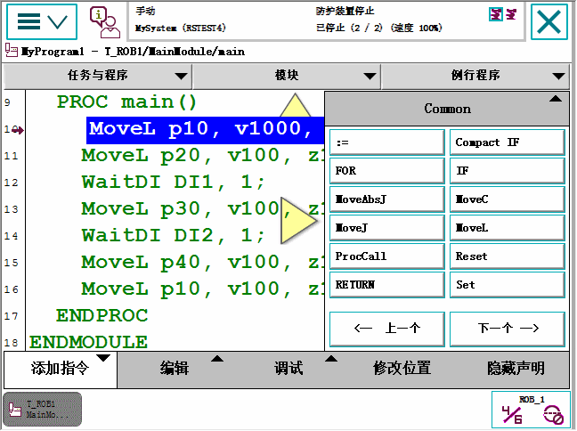
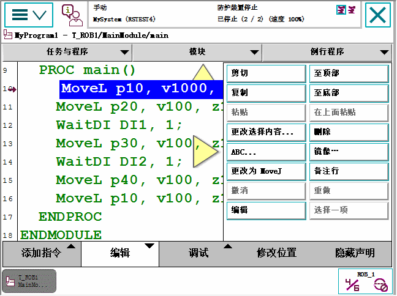
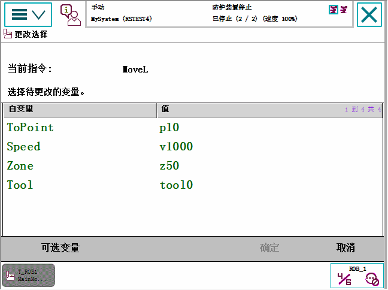
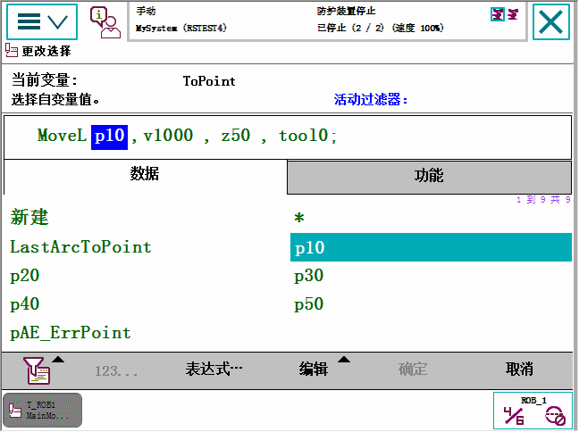

RAPID 程序包含指令。例如，指令能够移动机器人，设置 I/O 信号，或向操作员写消息。
技术参考手册 - RAPID指令、函数和数据类型中列出了大量可以使用的指令。但添加指令的基本步骤是相同的。
在程序编辑器中编辑程序时，您可以撤消和恢复最多三个步骤。Edit（编辑）菜单中提供了本功能。
本节介绍添加指令的方法。
操作 | |
1 | 在 ABB 菜单中，点击 Program Editor（程序编辑器）。 |
2 | 点击突出显示您要添加新指令的指令。 |
3 | 点击 Add instruction（添加指令）。 指令类别将显示。  有许多指令可供使用，它们被分为若干类别。默认类别是 Common（常用），其中列出了最常用的指令。 您可以使用标题 Man-machine Communication 中的 Most Common Instruction 类型系统参数创建三个个性化列表。有关系统参数的说明，请参阅技术参考手册 - 系统参数。 |
4 | 点击 Common（常用）显示可用分类的列表。 您也可以点击指令列表底部的 Previous/Next（上一个/下一个） 移至上一个/下一个类别。 |
5 | 点击需要添加的指令。 指令被添加到代码中。 |
本节介绍如何编辑指令变元。
操作 | |
1 | 点击要编辑的指令。  |
2 | 点击 Edit（编辑）。  |
3 | 点击 Change Selected（更改选择）。 变元具有不同的数据类型，具体取决于指令类型。使用软键盘更改字符串值，或继续下一步以处理其它数据类型或多个变元指令。  |
4 | 点击要更改的变元。 这时会显示若干选项.  |
5 | 点击一个现有数据实例，然后点击确定完成，也可点击 Expression（表达式）。一节。 |
提示 双击指令将自动启动"更改选择"选项。双击指令变元将自动启动变元编辑器。 |
本节介绍如何粘贴指令或变元。
操作 | |
1 | 点击选择想要复制的变元或指令。 要选择多个行：选择第一行，点击 Edit（编辑） 菜单中的 Select Range（选择范围），然后点击最后一行。 |
2 | 点击 Edit（编辑），然后点击 Copy（复制）。 |
3 | 将光标置于您想要粘贴指令或变元的指令之上，或点击您想要更改的变元或指令，然后点击 Paste（粘贴）。 |
本节介绍如何剪切指令。
操作 | |
1 | 点击选择想要剪切的指令。 要选择多个行：选择第一行，点击 Edit（编辑） 菜单中的 Select Range（选择范围），然后点击最后一行。 |
2 | 点击 Edit（编辑），然后点击 Cut（剪切）。 |
本节介绍如何更改移动指令的动作模式。
操作 | |
1 | 点击选择您想要更改的移动指令，然后点击 Edit（编辑）。 |
2 | 点击 Change to MoveJ（更改为 MoveJ） 或 Change to MoveL（更改为 MoveL）。 执行更改。 |
指令行可添加备注（即，在执行程序时会跳过的内容）。备注/去备注命令位于 Program Editor（程序编辑器）中的 Edit（编辑）菜单之下。